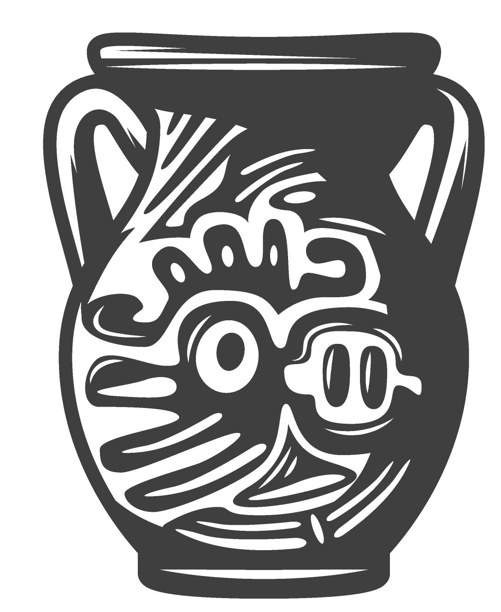
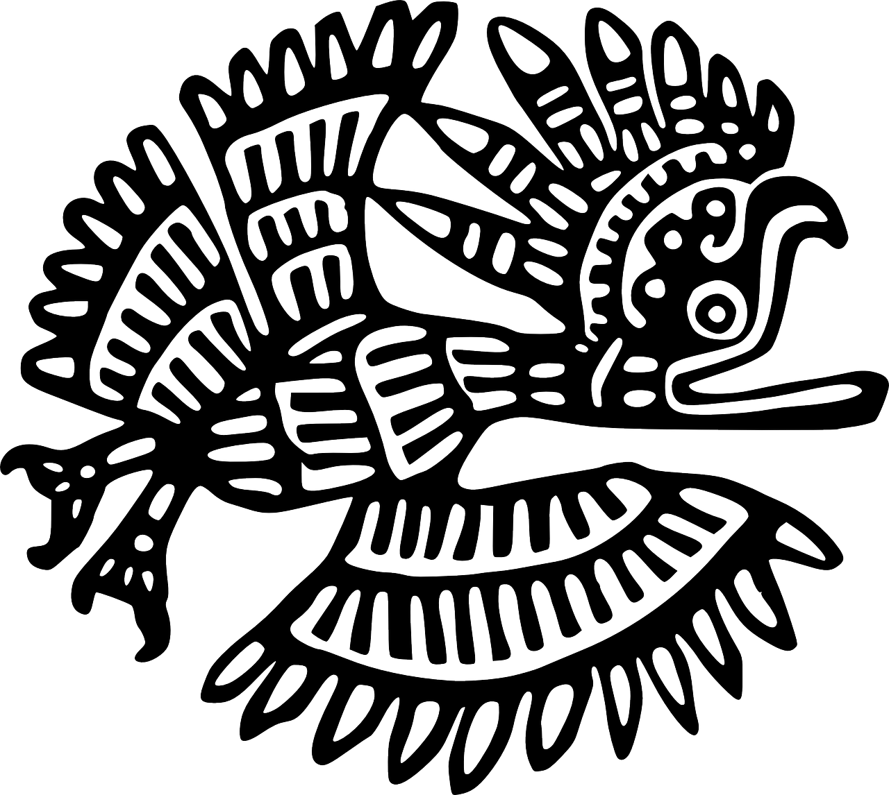
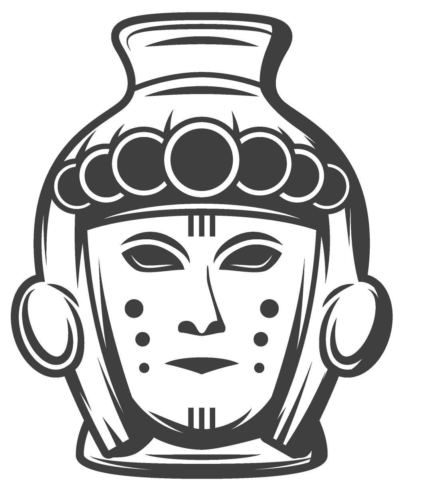

Hallo, wir sind Monika und Immo und möchten Euch bei uns zuhause in Izamal
begrüßen. Wir zeigen Euch gerne diese “magische Stadt”. Unser Haus am Rande Izamal´s ist eine Oase, in der man
sich austauschen, aber auch zur Ruhe kommen kann. Damit Ihr einen ersten Eindruck von uns bekommt, möchten wir
uns hier gern bei Euch vorstellen.
Monika ist Goldschmiedin und Künstlerin durch und durch. Sie verarbeitet
venezianisches Glas zu wundervollen Schmuckstücken, ist unglaublich kreativ und liebt alles Schöne und
Geschmackvolle. Bei ihr könnt ihr in ihren Workshops vieles über Kunst & Kunsthandwerk erlernen und erfahrt
auch z.B., wie unser Kakao und Kaffee hergestellt werden. Außerdem zelebriert sie mit unseren Gästen ein
vedisches Feuerritual – das Agnihotra.


Ich interessiere mich für den Sinn des Lebens, die Menschen und fremde Kulturen.
Beide sind wir Coaches für holistischen Gesundheit und Persönlichkeitsentwicklung. Schon früher habe ich als
Reisebusfahrer meine Gäste immer sicher an ihr Ziel gebracht und seit einigen Jahren begleite ich als
diplomierter Sozialpädagoge Menschen beim Erreichen ihrer persönlichen Ziele.
Meine Frau und ich verbinden Spiritualität mit positiver Psychologie und freudvollem Leben.
Meine Frau und ich verbinden Spiritualität mit positiver Psychologie und freudvollem Leben.
Die negativen Ereignisse der letzten Jahre in Europa haben uns beiden sehr zu
schaffen gemacht. Daher waren wir mehr als froh, ein Arbeitsangebot in Mexiko zu bekommen. Wir sollten
mithelfen, ein Gesundheitszentrum für Impfgeschädigte aufzubauen. In unseren Augen wäre das Projekt ein
wertvoller Beitrag gewesen um der Spaltung, die unsere Gesellschaft die letzten Jahre erleben musste,
entgegenzuwirken. Leider kam das Projekt aus finanziellen Gründen nicht zustande und wir mussten uns
entscheiden, ob wir Mexiko wieder verlassen sollten oder nicht. Da wir der Meinung sind nicht zufällig hier zu
sein, sondern dass es dafür einen tieferen Grund geben muss, haben wir uns für das Bleiben entschieden.


Jetzt lassen wir hier all unsere spirituellen, privaten und beruflichen Erfahrungen in unser neues Leben einfließen und helfen anderen Menschen dabei zu Ihr wahres Selbst zu entdecken und die irreführenden Manipulationen seit ihrer Geburt loszulassen. Gemeinsam suchen wir mit unseren Gästen neue Wege für ein besseres, wertschätzendes Zusammenleben. Die lang angekündigte Transformation der Welt ist jetzt da und wir können entscheiden, wohin die Reise gehen soll.
Seid herzlichst Willkommen bei uns zu Hause!
Liebe Grüße
Immo & Moni